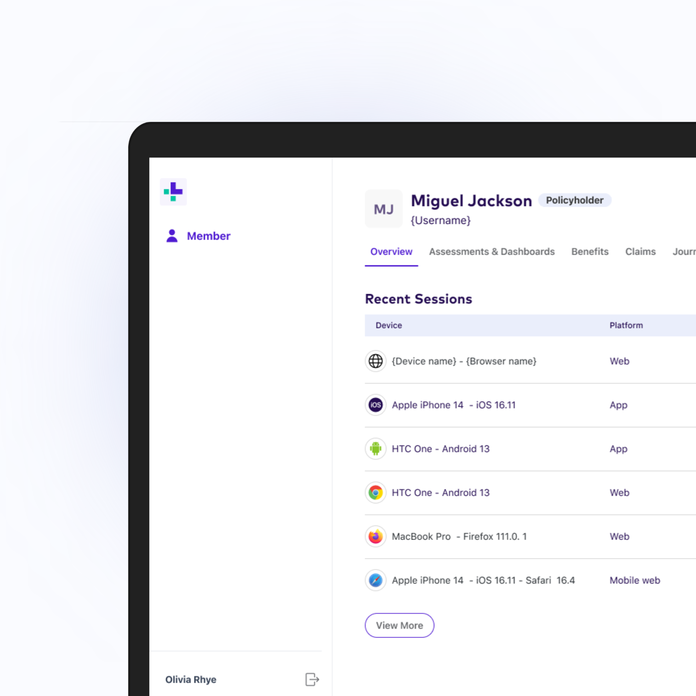
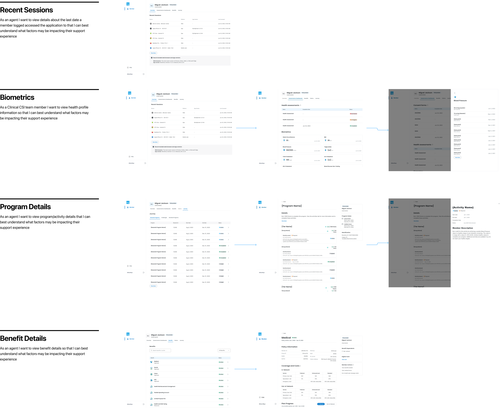

Support agents were resolving member inquiries by logging directly into member accounts — a workaround that worked, but shouldn't have existed. The Customer Support Portal replaced it with a dedicated, secure interface built for the job agents actually had to do.

Before this project, there was no dedicated tool for support agents to resolve member inquiries. So agents did what any team under pressure to help customers would do — they logged directly into member accounts to see what the member saw. It worked, but it meant every support interaction carried a real, unnecessary privacy and security risk, multiplied across 30+ client teams.
Agents strongly valued being able to see a member's past interactions without hunting for them — data continuity, not just data access.
Because the "solution" already existed as a workaround, the discovery challenge wasn't finding an unmet need — it was separating what agents genuinely needed to do their job from habits they'd built around a tool that was never designed for them. Two smaller details tested unexpectedly well and turned out to matter more than expected: an accumulator bar and app-version tooltips, both of which resolved confusion agents hadn't been able to name until they saw the fix in front of them. We also relabeled several fields where internal terminology didn't match how agents actually talked about the work day to day.
The Portal gave agents exactly the visibility they needed — member history, account status, past interactions — without the ability to act as the member. That distinction was the whole point: agents could see enough to resolve an inquiry with full context, but the interface itself made it structurally impossible to do what the old workaround technically allowed.
I shipped detailed, annotated design specs and led design QA to ensure accessibility compliance and accurate implementation across the build.

The Customer Support Portal replaced the account-login workaround entirely, giving support agents a dedicated, secure interface for 30+ client teams — closing a real privacy and security gap without adding friction to the job agents actually had to do.